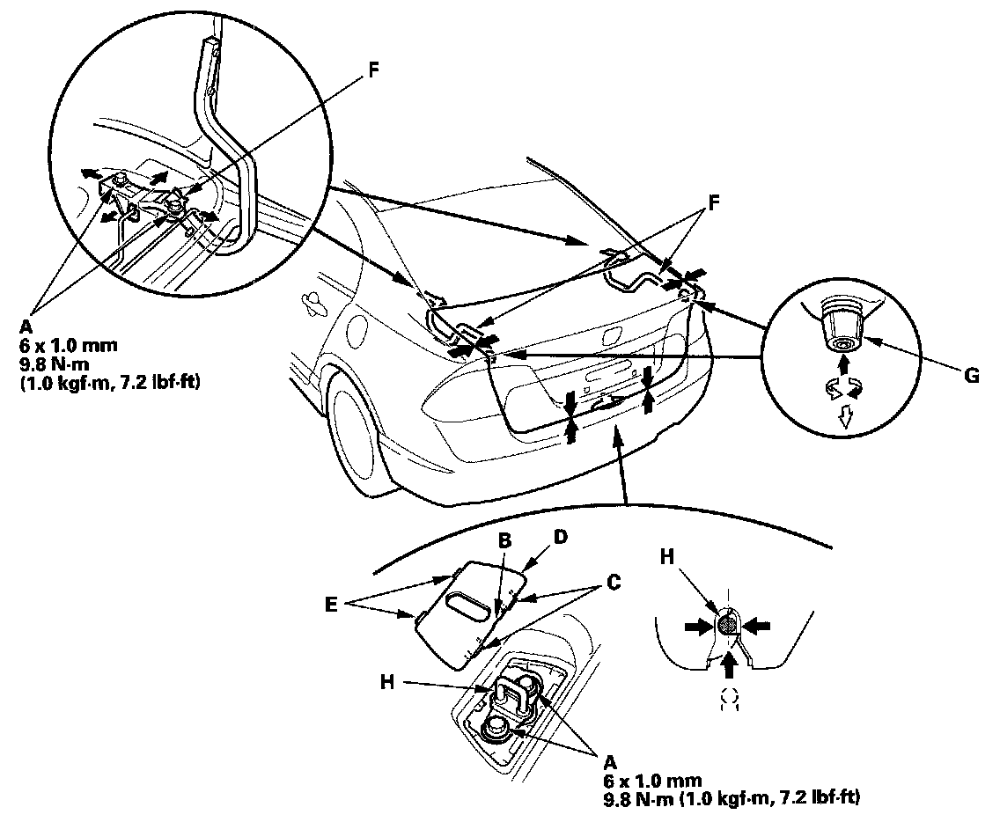

Trunk / Liftgate: Adjustments
Adjustment1. Remove the rear shelf.

2. Slightly loosen the trunk lid hinge bolts (A).
3. Pry up on the notch (B) to release the rear hooks (C) and pivot the cap (D) on the front hooks (E), then remove the cap.
4. Adjust the trunk lid alignment in the following sequence:
- Adjust the trunk lid hinges (F) right and left, as well as forward and rearward, by using the elongated holes. Take care not to hit the rear window when loosening the bolts.
- Turn the trunk lid edge cushions (G), in or out as necessary, to make the trunk lid fit flush with the body at the rear and side edges.
- Adjust the fit between the trunk lid and the trunk lid opening by moving the striker (H).
5. Tighten the bolts to the specified torque.
6. Make sure the trunk lid opens properly and locks securely.
7. Reinstall all removed parts.